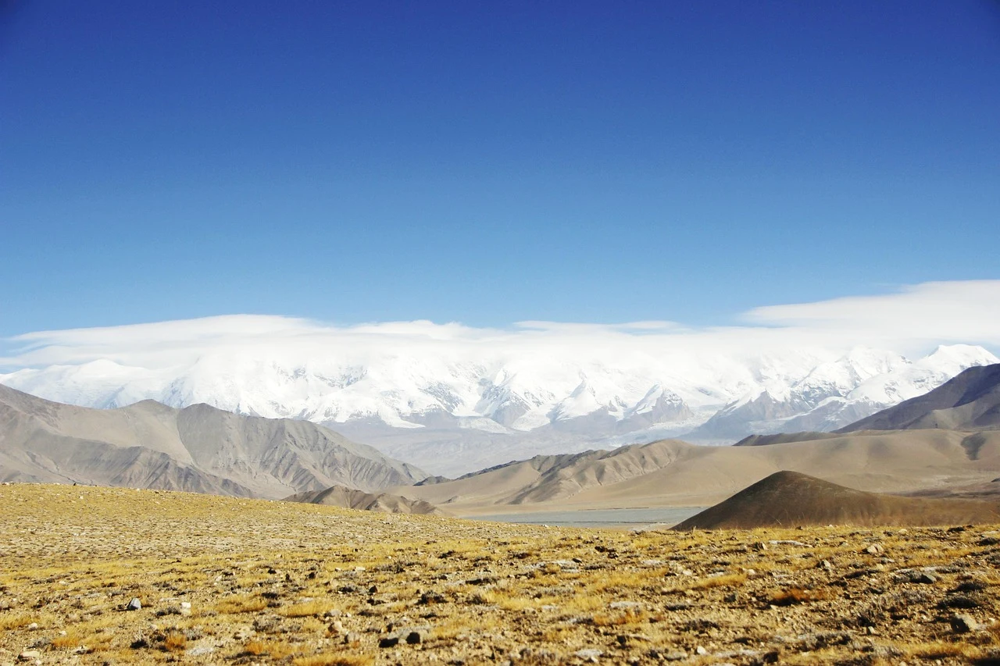

City walk
City walkCity walk
An oasis in the desert that wakes after dark
Hotan's best moments mostly begin after the sun goes down.
Hotan, ancient Khotan, was a core town on the southern Silk Road and is the world-famous home of Hetian jade. South of the city rise the majestic Kunlun Mountains; north lies the vast Taklamakan Desert. The White Jade River carries cool meltwater from the Kunlun glaciers, bringing gentle jade veins into the streets. It is an oasis in the desert and a living secret land of diverse intangible heritage — mulberry-paper, Atlas silk and handmade carpets pass down through generations in the old town. Many come only to hunt jade, yet under a night-market lamp they fall for the city's unhurried everyday life.
The route at a glance
- 10:00–13:00 Tuancheng scenic area (Pigeon Lane・Rose Lane)
- 15:00–17:00 Hotan Jade City
- 17:00–18:30 Yurungkash River
- 20:30–01:30 Hotan Night Market (dinner)
- Optional: Yo'tgan ancient city night show
The urban highlights are not rushed; the night market opens only after 20:00, so don't be surprised to find it closed by day — schedule a proper meal in town first.
Tuancheng scenic area (10:00–13:00)
In the city centre, Tuancheng is Hotan's "urban living room" and a national-level tourism and leisure district. Its name means "city of unity", like pomegranate seeds held tight. The core Pigeon Lane and Rose Lane are a maze of painted houses, arches and grape pergolas — extremely photogenic; the heritage bazaar shows live making of mulberry-paper, Atlas silk and handmade carpets. Most buildings are Aywang houses — rammed earth and timber with square skylights on the roof, walls and doors carved with ethnic patterns, a representative traditional dwelling of Southern Xinjiang.
Tip: vehicles are banned inside Tuancheng, walk only; ask before photographing residents; navigate to "Hotan Tuancheng Scenic Area", not just "Tuancheng".
Hotan Jade City (15:00–17:00)
Hetian's largest jade complex, blending an open rough-stone market, indoor finished-goods shops, jade-carving workshops and a jade museum. Thousands of open stalls spread seeds, mountain material and crafts; locals check, pick and bargain over jade with flashlights — the most lively place. A paradise for seasoned players; for ordinary travellers, the scene alone is worth it. The park is open to visit; stalls fully open after 15:00, busiest on Wed and Sun.
Yurungkash River (17:00–18:30)
Also called the White Jade River, mother river of Hetian jade seeds, fed by Kunlun glacier melt. The bed is full of pebbles; clear shallow water runs over the stones, and at sunset the surface light is beautiful. Coming to Hotan, you must walk down to the riverbed for the joy of hunting jade — the chance of finding fine jade is tiny, but stepping in cool water and watching the snowmelt rush is itself a reset. With luck you may meet locals panning by the river.
Hotan Night Market (20:30–01:30)
Hotan Night Market is one of Xinjiang's largest indoor night markets, open every night year-round, weather-proof. Under the big canopy, over two hundred stalls line up; the smoke of red-willow kebabs mixes with the sweet scent of pomegranate juice, lively past midnight. Around 20:30 there is song and dance in the canopy — stand with a cup of pomegranate juice and watch. This is not a "food street" staged for photos, but the real backdrop where locals bring the family and even taxi drivers stop for a few skewers after work. Must-try: roast pigeon, three-egg-one-star, roasted eggs, red-willow kebabs, yoghurt zongzi, with a cup of fresh pomegranate juice — the uniquely southern night-market sweet finish.
- Eat: roast pigeon, three-egg-one-star, roasted eggs, red-willow kebabs, yoghurt zongzi, pomegranate juice.
- See: about 21:00 Uyghur song and dance, the slow sand-roast at the egg stall.
Yo'tgan Ancient City (optional night show)
In Baghchi town of Hotan County, a scenic area rebuilt on the history of ancient Khotan. The real highlight is after dark — the immersive live show "Wanfang Lezou You Yutian" leads you through lanes with the actors; light, song and story weave the Silk Road legends of Princess Wencheng bringing sericulture, Xuanzang's westward journey, and Ban Chao's campaigns. If you like immersive theatre, it is worth a night.
Locals know: Hotan hugs the Taklamakan and has some of China's most frequent dust days, locals call it "down-to-earth dust" — that is why the night market is an indoor canopy, clean inside while sand blows outside. The night market opens only after 20:00; walk empty-stomached first to see which stall locals queue at, then go back — old-hand wisdom. The roast buns and meat naan of Yurungkash town are good dry food before leaving. Jade hunting is luck; treat it as experience; Tuancheng is walk-only, navigate to "Hotan Tuancheng Scenic Area".
Restaurants & drinks
Hotan's essence is the night market and the old-town bazaar; formal restaurants are fewer than in big cities, but honest and homely. Cafés are still rare in this desert oasis — for a cup you rely on fresh-milk bars and tea houses. The picks below are steady favourites of the night market and downtown; hours may change, so confirm before going.
Where locals eat
- Hotan Night Market stalls (Tanaiyi South Rd): climate-controlled, comfortable year-round, widest food range. The pigeon stall's charcoal glows red, skin thin as paper, meat juicy; three-egg-one-star bakes goose egg, pigeon yolk and saffron honey into a molten centre; yoghurt zongzi drizzled with fig honey cuts the kebab grease.
- Yurungkash Town Roast Bun Shop: thin-crust, full-filled fresh roast buns, the town's daily bite; meat naan wraps filling inside, good as dry food or a meal. Buy a few before heading to the suburbs.
- Zhengfei Fresh Milk (Hotan Night Market branch): same-day handmade yoghurt from local pasture milk, clean ingredients. The layered milk-skin, cheese buns and cold-brew yoghurt are local favourites — the night market's grease-cutter.
- Tuancheng Family (inside Tuancheng): eat right after touring Tuancheng — Hotan home cooking and kebabs, plain setting, honest portions.
Fresh milk & tea
- Night-market fresh milk & pomegranate-juice stalls: Hotan pomegranates are big and full; the maker presses a cup bright red on the spot, sweet without sugar; the milk-skin and yoghurt from fresh-milk bars are handy snacks while strolling.
Practical information
- Getting there: Hotan airport and station reach downtown directly; cheap city taxis, walk inside Tuancheng; taxi or drive to Jade City and desert viewpoints.
- Best season: Apr–Jun, Sep–Oct are pleasant; summer has more dust, bring sun protection and throat care.
- Suggested stay: one day City Walk (with night market) is right; desert viewpoints and Yo'tgan Ancient City can be separate.
- Dress & sun: strong UV, dry climate; sunscreen, sunglasses, hat, moisturiser; no pork or alcohol in halal restaurants.
- Local notes: night market opens after 20:00; wear a mask and eye protection on dust days; ask before photographing residents; if not a seasoned player, just look at jade, don't buy.
Want to walk Hotan and Southern Xinjiang through? Our private car and guide plan it: from Tuancheng lanes to the desert sunset and night-market smoke — your route, no rushing, no shop stops, local driver, stop and shoot anywhere.
Keep reading
Further reading
Keep walking the southern Silk Road.
City walk
City walk Index
Index